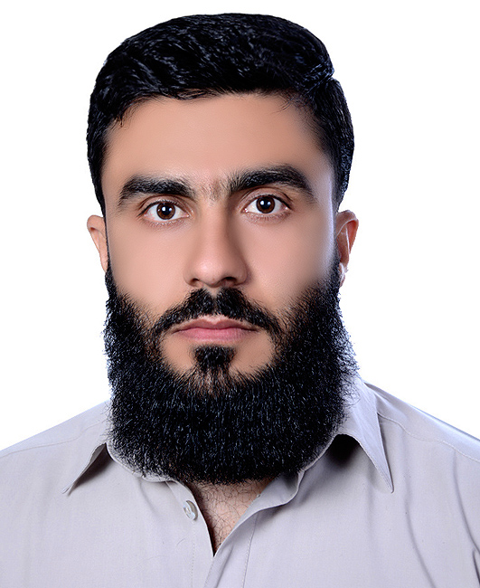

Ziaul Haq Doost
Water Resources & Environment Management Researcher
Civil and environmental engineering researcher working across hydrological modeling, water-resources planning, groundwater, flood-risk analysis, climate-change assessment, GIS and remote sensing, environmental modeling, machine learning, and uncertainty analysis.

About Me
Research, engineering, environmental science, and data-driven modeling.
I am a civil and environmental engineering researcher with research spanning hydrological modeling, water-resources planning, groundwater change, flood-frequency analysis, climate-change projections, GIS and remote sensing, machine learning, and environmental engineering.
My research combines engineering knowledge, environmental and spatial data, statistical analysis, computational modeling, and artificial intelligence to investigate water and environmental challenges. My experience includes research development from problem formulation and data analysis through scientific interpretation, manuscript preparation, peer review, and publication.
In addition to academic research, I have professional engineering experience in irrigation, drinking-water and sanitation systems, community infrastructure, construction supervision, environmental screening, project management, engineering surveys, and quality control.
Research Interests
Interdisciplinary research at the intersection of water, environment, geospatial science, and computational intelligence.
Hydrology & Water Resources
Hydrological analysis, runoff management, water harvesting, reservoir planning, water-resources systems, and sustainable water management.
Groundwater
Groundwater assessment, groundwater fluctuations, land-use impacts, water quality, and groundwater-resource management.
Flood Risk
Flood-frequency analysis, intensity-duration-frequency relationships, hydrological extremes, infrastructure risk, and resilience.
Climate Change
Climate projections, statistical downscaling, climate impacts, adaptation, temperature and precipitation change, and environmental risk.
GIS & Remote Sensing
Spatial analysis, geospatial decision support, land-use and land-cover assessment, remote sensing, and environmental mapping.
Machine Learning & AI
Predictive modeling, ensemble learning, clustering, explainable AI, uncertainty analysis, and environmental applications of artificial intelligence.
Environmental Engineering
Water quality, treatment systems, environmental assessment, heavy metals, pollution modeling, and sustainability.
Data Science
Statistical analysis, scientific computing, visualization, uncertainty quantification, and reproducible research workflows.
Sustainable Infrastructure
Water infrastructure, irrigation systems, engineering planning, environmental safeguards, and sustainable community development.
Education
Academic training in civil engineering and water-resources management.
Master of Science in Civil & Environmental Engineering
King Fahd University of Petroleum and Minerals, Saudi Arabia
Thesis: Runoff Management for Sustainable Water Supply in Harirud River Basin, Herat, Afghanistan.
Bachelor of Science in Civil Engineering
Associate Degree Grade 14 in Construction Engineering
Peer-Reviewed Publications
Selected publication record across water, environment, machine learning, energy, geospatial science, and engineering.
Research & Professional Experience
Academic research, teaching, engineering practice, project management, and infrastructure development.
Graduate Researcher & Teaching Assistant
King Fahd University of Petroleum and Minerals, Saudi Arabia
- Conducted research on sustainable runoff management and reservoir-site allocation.
- Contributed to research on groundwater, flood risk, water harvesting, climate downscaling and hydrological modeling.
- Prepared research datasets, quantitative analyses, scientific figures, maps and journal manuscripts.
- Supported undergraduate laboratory instruction, tutoring, grading and instructional activities.
District Engineer
- Directed engineering surveys, designs, cost estimates, bills of quantities and construction supervision.
- Worked on environmental screening and environmental and social management plans.
- Reviewed technical proposals, drawings, monitoring findings and project records.
Project Manager
Food for Assets Project, Herat, Afghanistan
- Managed project staff, schedules, stakeholder coordination, quality assurance and risk reporting.
- Coordinated beneficiary selection and monthly donor reporting.
Civil Engineer
Herat, Afghanistan
- Supported drinking-water, sanitation and civil-infrastructure projects.
- Performed survey, design, costing, proposal development, implementation monitoring and quality control.
Civil Engineer
- Performed topographic and implementation surveys.
- Conducted engineering estimates, feasibility studies, cost-benefit analyses and site assessments.
Technical Competencies
Research, computational, hydrological, geospatial and engineering capabilities.
Research & Data Science
Python • MATLAB • Statistical Analysis • Data Visualization • Machine Learning • Literature Synthesis • Academic Writing • Peer-Review Revision
Hydrology & Environment
HEC-HMS • HEC-RAS • EPANET • Hydrological Analysis • Flood-Frequency Analysis • Groundwater Assessment • Water-Resources Planning
Geospatial & Engineering
GIS • Remote Sensing • AutoCAD • Civil 3D • 3ds Max • Engineering Survey • Quantity Estimation • Environmental & Social Safeguards
Data & Code
A growing collection of research datasets, reproducible workflows, scientific code, computational models and research resources.
Research Code
Python scripts, machine-learning workflows, statistical analyses, Monte Carlo simulations, visualization tools and scientific utilities.
Research Data
Datasets, processed research data, supplementary materials and documentation for reproducible scientific research.
Jupyter Notebooks
Interactive computational notebooks covering machine learning, hydrology, environmental modeling, statistics and research workflows.
Educational Tools
Free interactive applications and learning resources for students and learners.
TOEFL Complete the Word Practice
A free interactive TOEFL practice application containing 1,325 Complete the Word tasks designed for extensive practice. The application will be published here shortly.
Selected Training
Professional and technical training.
Esri | 2022
Afghanaid with OXFAM Novib | 2018
BORDA | 2015
Asian Development Bank | 2014
USAID AWDP AMRAN | 2013
Academic & Professional Profiles
Connect with my research and professional work across academic platforms.
Contact
For research collaboration, academic communication and professional inquiries.
ORCID: 0000-0001-6256-2699 • Scopus Author ID: 58772832800